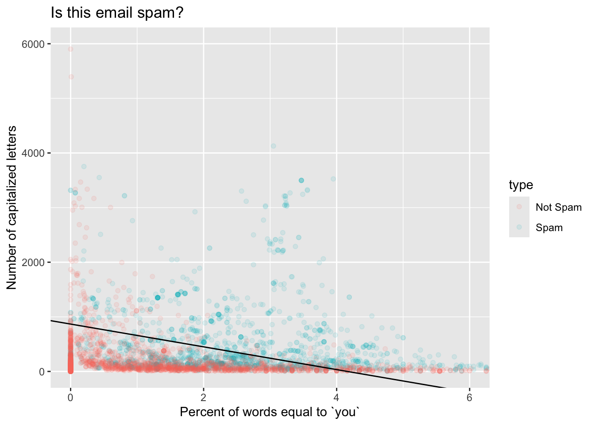

library(tidyverse)
library(tidymodels) Logistic regression
The logistic regression model uses a set of predictors (\(x_1\), \(x_2\), …, \(x_p\)) to model the probability that a binary response \(y\) is equal to one:
\[ \text{Prob}(y=1)=\frac{1}{1+e^{-(\beta_0+\beta_1x_1+...+\beta_px_p)}}. \]
This primer leads you down the path of least resistance to fitting this model, plotting the best-fitting S-curve in the single-predictor case, plotting the decision boundary in the bivariate case, and generating predictions.
Setup
The commands for working with logistic regressions are in the tidymodels package, so load that:
Next, we need something to model, so let us load in a data set. We will consider this data set from Hewlett-Packard on spam emails:
hp_spam <- read_csv("hp-spam.csv")
hp_spam <- hp_spam |>
mutate(type = as.factor(type))
Note
Be prepared to adjust the file path to match how you have organized your files and folders.
hp_spam |>
select(type, george, capitalTotal, you, charDollar)# A tibble: 4,601 × 5
type george capitalTotal you charDollar
<fct> <dbl> <dbl> <dbl> <dbl>
1 1 0 278 1.93 0
2 1 0 1028 3.47 0.18
3 1 0 2259 1.36 0.184
4 1 0 191 3.18 0
5 1 0 191 3.18 0
6 1 0 54 0 0
7 1 0 112 3.85 0.054
8 1 0 49 0 0
9 1 0 1257 1.23 0.203
10 1 0 749 1.67 0.081
# ℹ 4,591 more rowsEach observation (row) represents an email that was sent to a person named George, and the variables (columns) include:
type: is the email spam or not?george: percentage of words in email that are “George”;you: percentage of words in email that are “you”;capitalTotal: number of capitalized letters in email;charDollar: percentage of characters that are a dollar sign.
Intuition suggests that a less personalized email (does not mention George by name) with lots of capital letters (I’M NOT SCREAMING) and dollar signs is more likely to be spam. Can we capture this in a model?
Run a “simple” logistic regression and plot the best-fitting S-curve
Take the same code we’ve seen before, change linear_reg to logistic_reg, and bada bing:
type_you_fit <- logistic_reg() |>
fit(type ~ you, data = hp_spam)
tidy(type_you_fit)# A tibble: 2 × 5
term estimate std.error statistic p.value
<chr> <dbl> <dbl> <dbl> <dbl>
1 (Intercept) -1.01 0.0456 -22.2 4.72e-109
2 you 0.341 0.0193 17.6 1.68e- 69These estimates determine the shape of the best fitting S-curve for these data. Chapter Nine in our textbook provides further discussion of how we might interpret the estimates probabilistically, but we will not concern ourselves with this at the present. For us, estimating these will simply be a means to an end of determining a model that we can use as a black box for prediction.
This code plots the S-curve. Apart from the weird and ugly y = as.numeric(type) - 1) part at the beginning, the only difference with plotting a straight best fit line is we changed the method (and some other things) inside geom_smooth:
ggplot(hp_spam, aes(x = you, y = as.numeric(type) - 1)) +
geom_point() +
geom_smooth(
method = "glm",
se = FALSE,
method.args = list(family = binomial)
) +
labs(
x = "Percent of words equal to `you`",
y = "Probability the email is spam"
)The logistic regression model is a special case of a generalized linear model (glm), so method = "glm" is us telling R that we want to do…that. But there are many generalized linear models out there, and so method.args = list(family = binomial) is us telling it we want the logistic one.
Run a “multiple” logistic regression and plot the decision boundary
Just like there is nothing special about a single predictor in linear regression, there is nothing special about a single predictor in logistic regression. To add more predictors to the model, we just add them to the formula (y ~ x) inside fit:
type_you_capital_fit <- logistic_reg() |>
fit(type ~ you + capitalTotal, data = hp_spam)
tidy(type_you_capital_fit)# A tibble: 3 × 5
term estimate std.error statistic p.value
<chr> <dbl> <dbl> <dbl> <dbl>
1 (Intercept) -1.50 0.0554 -27.1 2.97e-162
2 you 0.361 0.0198 18.3 1.84e- 74
3 capitalTotal 0.00173 0.000104 16.6 5.66e- 62After doing some itchy algebra that you don’t necessarily have to concern yourself with1, we plot a scatter plot of our two predictors, color the points according to the type of the email, and then add a straight line (geom_abline) to visualize the decision boundary when we threshold \(\text{Prob}(y=1)\) at 1/2:
# extract the estimates from their tidy clutches
b0 <- tidy(type_you_capital_fit)$estimate[1]
b1 <- tidy(type_you_capital_fit)$estimate[2]
b2 <- tidy(type_you_capital_fit)$estimate[3]
# set the threshold for classification
p_thresh <- 0.5
# compute intercept and slope of decision boundary
bd_incpt <- (log(p_thresh / (1 - p_thresh)) - b0) / b2
bd_slp <- -b1 / b2
# plot that thing
hp_spam |>
mutate(type = if_else(type == 1, "Spam", "Not Spam")) |>
ggplot(aes(x = you, y = capitalTotal, color = type)) +
geom_point(alpha = 0.1) +
coord_cartesian(xlim = c(0, 6), ylim = c(0, 6000)) +
geom_abline(slope = bd_slp, intercept = bd_incpt) +
labs(
x = "Percent of words equal to `you`",
y = "Number of capitalized letters",
title = "Is this email spam?"
)
If an email has features that place it above the line, we predict that it is a spam email. If an email has features that place it below the line, we predict that it is not. As you can see, this boundary is not perfect – there are red points above and blue points below. But nevertheless, it captures our intuitions pretty well; an email with a high fraction of “you” and many capital letters is more likely spam. If you keep studying statistics and machine learning, you will learn plenty of fancy methods for drawing funky, nonlinear decision boundaries that account for all sorts of contingencies.
Something to play around with: adjust the threshold p_thresh and see how it changes the decision boundary.
Make a prediction when a new email arrives
The scatterplot with the colored points and the linear decision boundary is cute, but if we have more than two predictors, this stuff becomes difficult or impossible to visualize. Fortunately, we do not have to eyeball a picture in order to use this machinery to make decisions.
If we get a new email where the frequency of you is 5% and there are 2,500 capital letters, what is the probability that this email is spam?
new_email <- tibble(
you = 5,
capitalTotal = 2500
)
predict(type_you_capital_fit, new_data = new_email, type = "prob")# A tibble: 1 × 2
.pred_0 .pred_1
<dbl> <dbl>
1 0.00963 0.990According to our model, the probability of this email being spam is 99%, which is above any normal threshold we might choose. Send it to the trash!
Footnotes
This is not hard to derive. Set \((1+e^{-(\beta_0+\beta_1x_1+\beta_2x_2)})^{-1}\) equal to your chosen threshold \(p^\star\), and then solve for \(x_2\) as a function of \(x_1\). You’ll get a line.↩︎